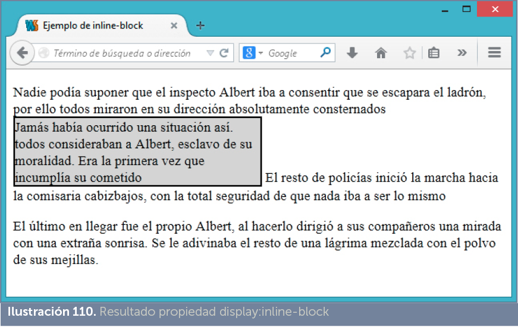
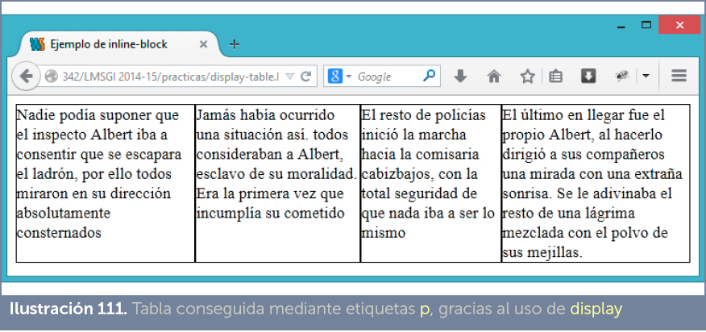
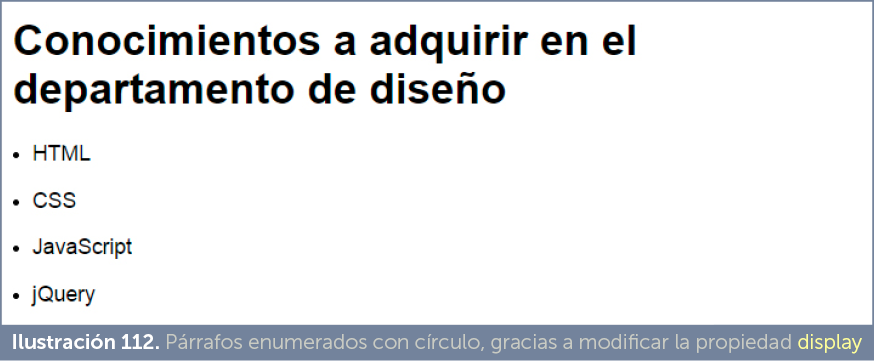

Los distintos elementos de HTML tiene un modo por defecto de presentarse por pantalla. Así, por ejemplo, los elementos p o h1, utilizan un área rectangular, mientras que los elementos strong o em se muestran seguidos en la pantalla.
La propiedad que se encarga de estos es display, una propiedad aparecida en CSS2 que permite establecer la forma en la que se muestra por pantalla un elemento. Está especialmente indicada para documentos distintos a HTML (XML especialmente) en los que su contenido no tiene por defecto una forma de mostrarse.
En HTML permite modificar la forma en la que se muestra un elemento. Por ejemplo, en HTML los elementos de tipo p (párrafos) se entiende que se mostrarán como párrafos independientes, es decir, con cada etiqueta p comienza un nuevo párrafo o bloque. No irán seguidos dos elementos de párrafo consecutivos.
Gracias a display el comportamiento de un elemento se puede modificar. Por ejemplo en esta página:
<!doctype html> |
Se mostrará el contenido de esta forma:
Uno Dos Tres Cuatro Cinco Seis
Ya que se ha modificado la propiedad para que los elementos de tipo p vayan seguidos en la misma línea.
Los elementos inline ignoran los márgenes superior e inferior, pero sí reconocen los rellenos y los márgenes izquierdo y derecho, así como los bordes y los colores e imágenes de relleno. No hacen caso de las propiedades width, height.
Ejemplos de elementos que son por defecto de este tipo serían: span, small, strong, em, mark, abbr, kbd, etc.
Los elementos de tipo block admiten manipular cualquier propiedad. Elementos, por defecto, de este tipo son: p, h1, div, section, article, nav, figure, ul, etc.
Ejemplos de elementos de este tipo son: button, image, input, textarea, select, etc.
Todos estos valores son muy modernos (algunos no funcionan en casi ningún navegador de los existentes en el momento de escribir estas líneas).
Se detallará su funcionamiento en capítulos posteriores.
En el siguiente ejemplo se ha modificado la presentación habitual del elemento span (que normalmente es inline) para que sea inline-block y además se le ha colocado borde y sombreado para observar cuál es la forma y posición del elemento.
<!doctype html> display:inline-block;
width:50%; <p> Nadie podía suponer que el inspecto Albert iba a consentir que se escapara el ladrón, por ello todos miraron en su dirección absolutamente consternados <span id=”marco”> Jamás había ocurrido una situación así. todos consideraban a Albert, esclavo de su moralidad. Era la primera vez que incumplía su cometido </span> El resto de policías inició la marcha hacia la comisaria cabizbajos, con la total seguridad de que nada iba a ser lo mismo </p> <p> El último en llegar fue el propio Albert, dirigió a sus compañeros una mirada con una extraña sonrisa. Se le adivinaba el resto de una lágrima mezclada con el polvo de sus mejillas. </p> </body> </html> |
El resultado del código es:

Otro ejemplo (creación de tablas sin usar la etiqueta table):
<!doctype html>
<html lang=”es”> <head> <meta charset=”UTF-8”> <title>Ejemplo de inline-block</title> <style>
#contenedor{
display:table;
} #fila{
display:table-row;
} p{
display:table-cell;
border:1px solid black;
} </style> </head> <body> <div id=”contenedor”> <div id=”fila”> <p> Nadie podía suponer que el inspecto Albert iba a consentir que se escapara el ladrón, por ello todos miraron en su dirección |
absolutamente consternados </p> <p> Jamás había ocurrido una situación así. todosconsideraban a Albert, esclavo de su moralidad. Era la primera vez que incumplía su cometido </p> <p> El resto de policías inició la marcha hacia la comisaria cabizbajos, con la total seguridad de que nada iba a ser lo mismo </p> <p> El último en llegar fue el propio Albert, al hacerlo dirigió a sus compañeros una mirada con una extraña sonrisa. Se le adivinaba el resto de una lágrima mezclada con el polvo de sus mejillas. </p> </div> </div> </body> </html> |
Resultado:

En el código que se muestra a continuación se consigue que los elementos de tipo p se muestren como si fueran listas y no párrafos normales:
<!doctype html>
<html lang=”es”> <head> <meta charset=”UTF-8”> <title>Ejemplo de list-item</title> <style>
p{
display:list-item;
list-style-type: disc;
list-style-position: inside;
} </style> </head> <body> <h1> Conocimientos a adquirir en el departamento de diseño </h1> <p>HTML</p> <p>CSS</p> <p>JavaScript</p> <p>jQuery</p> </body> </html> |
Resultado:

Debido a la proliferación de dispositivos de todo tipo para navegar por páginas web, es cada vez más difícil hacer un diseño fijo; más bien hay que hacer diseños adaptables a las diferentes pantallas posibles (la de un ordenador personal, la de una tableta, la de un móvil).
Además es deseable que nuestra página se adapte ante un cambio de resolución en caliente: como el que se produce cuando un usuario ve una página usando el móvil en posición vertical, y después decide poner el móvil en posición apaisada. La página debe adaptarse al instante a la nueva posición.
Esta adaptabilidad extrema de las páginas es lo que se conoce como páginas responsive, páginas que se adaptan a diferentes formatos de medios.
Las páginas de estilos siempre han tenido la posibilidad de indicar a qué medio se dirigen a través de un atributo, presente en el elemento link llamado media.
Ejemplo:
<link rel=”stylesheet” href=”estilos.css” media=”print”> |
El código anterior indica que la hoja de estilos se aplica cuando el documento se imprima (por lo tanto no para lo que se ve en la pantalla).
También podemos hacer especificaciones más complejas:
<link rel=”stylesheet” href=”estilos.css” media=”screen and (max-width:640px)”> |
La hoja se aplicará cuando la página se vea en una pantalla y la ventana que muestra la misma no supere los 640 píxeles de anchura.
Otra posibilidad de realizar media queries es usar la directiva @media dentro del código CSS. Ejemplo:
@media screen and (max-width:640px){ /* código que se ejecuta si la pantalla no tiene
un ancho mayor de 640*/
} |
En realidad se utiliza más habitualmente esta posibilidad. Incluso podemos indicar más de una directiva de este tipo en la misma página.
Los medios posibles son:
La norma indica1 que se abre la posibilidad de que aparezcan nuevos dispositivos (por ejemplo 3d-glasses).
Dentro de un media query podemos utilizar las siguientes propiedades:
|
propiedad |
valor |
||
|
height |
Altura de la ventana que muestra la página. Ejemplo:
|
||
|
width |
Anchura de la ventana que muestra la página |
||
|
device-height |
Altura del dispositivo |
||
|
device-width |
Anchura del dispositivo |
||
|
max-height |
Altura máxima de la ventana que muestra el dispositivo |
||
|
max-width |
Anchura máxima de la ventana que muestra el dispositivo |
||
|
min-height |
Anchura mínima de la ventana que muestra el dispositivo |
||
|
min-width |
Anchura mínima de la ventana en la que se muestra la página |
||
|
max-device-height |
Altura máxima del dispositivo |
||
|
max-device-width |
Anchura máxima del dispositivo |
||
|
min-device-height |
Altura mínima del dispositivo |
||
|
min-device-width |
Anchura mínima del dispositivo |
||
|
orientation |
Indica la orientación del dispositivo. Se le puede dar el valor portrait (aspecto tipo retrato, proporciones verticales del dispositivo) o landscape (apaisado). |
||
|
aspect-ratio |
Relación de aspecto que debe de cumplir la ventana que muestra la página. Por ejemplo 16/9 |
||
|
device-aspect-ratio |
Relación de aspecto que debe de cumplir la pantalla. Por ejemplo 16/9 |
||
|
max-aspect-ratio |
Relación de aspecto máxima que debe de cumplir la ventana que muestra la página. Por ejemplo si ponemos 16/9 un ratio mayor (como 20/9) hace que el código no se ejecute. |
||
|
max-device-aspect-ratio |
Máxima relación de aspecto, pero referida al dispositivo y no a la ventana |
||
|
min-aspect-ratio |
Relación de aspecto mínima que debe de cumplir la ventana que muestra la página |
||
|
min-device-aspect-ratio |
Relación de aspecto mínima que debe de cumplir el dispositivo que muestra la página |
||
|
resolution |
Resolución del dispositivo. |
||
|
max-resolution |
Resolución máxima del dispositivo (por ejemplo 300dpi) |
||
|
min-resolution |
Resolución mínima del dispositivo |
||
|
color |
Indica si el dispositivo tiene capacidad para mostrar colores:
También permite indicar el número de bits de profundidad de colores del dispositivo:
|
||
|
monochrome |
Indica si el dispositivo es monocromo y asignando un número, se entenderá que se refiere al número de bits disponibles para mostrar las gamas de colores monocromos. |
||
|
max-color |
Máximo número de bits de profundidad para los colores del dispositivo de salida |
||
|
min-color |
Mínimo número de bits de profundidad para los colores del dispositivo de salida |
||
|
color-index |
En dispositivos con colores indexados, indica el número de colores en la tabla de índices que tiene que tener el dispositivo para que el código CSS en esta directiva funcione. |
||
|
max-color-index |
Máximo número de entradas de color |
||
|
min-color-index |
Mínimo número de entradas de color |
||
|
max-monochrome |
Máxima profundidad en bits de colores en una pantalla monocromo |
||
|
min-monochrome |
Profundidad en bits de colores siendo monocromo el dispositivo. |
||
|
scan |
Modo de escaneo de imágenes en el dispositivo, puede valer progressive (modo progresivo) e interlace (entrelazado) |
||
|
grid |
Indica si el dispositivo es táctil. Ejemplo:
|
Ejemplo combinando consultas:
@media screen and (device-max-width:640px) and (orientation:landscape){ html{
font-size:10px; } } |
En dispositivos con pantallas de menos de 640píxeles y que estén en formato horizontal, la letra general o base mide 10 píxeles.
Todos os navegadores modernos reconocen media queries. Si tenemos necesidad de utilizar en navegadores antiguos podemos incorporar la librería JavaScript de Wouter van der Graaf disponible en:
http://css3-mediaqueries-js.googlecode.com/svn/trunk/css3-mediaqueries.js
Ejemplo de uso (código que enlaza dicha librería si nuestro navegador es Internet Explorer con versión anterior a la 9):
<!--[if lt IE 9]>
<script src=
”http://css3-mediaqueries-js.googlecode.com/svn/trunk/css3-mediaqueries.js”>
</script> <![endif]-->
|
1 Más información en https://www.w3.org/TR/css3-mediaqueries/